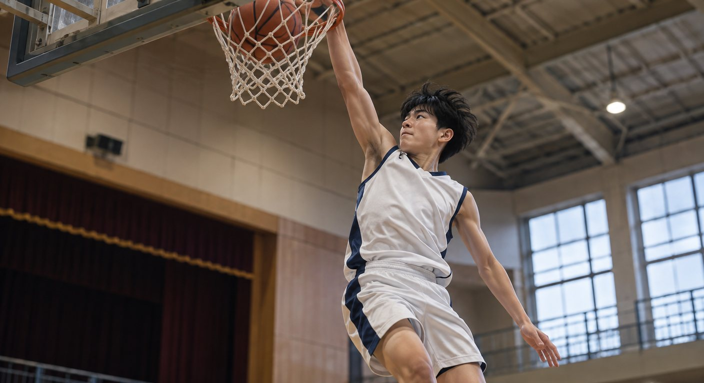
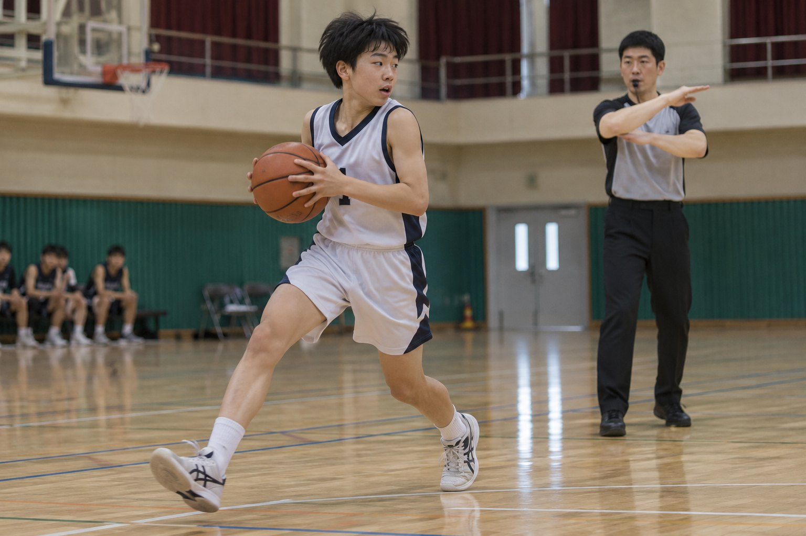
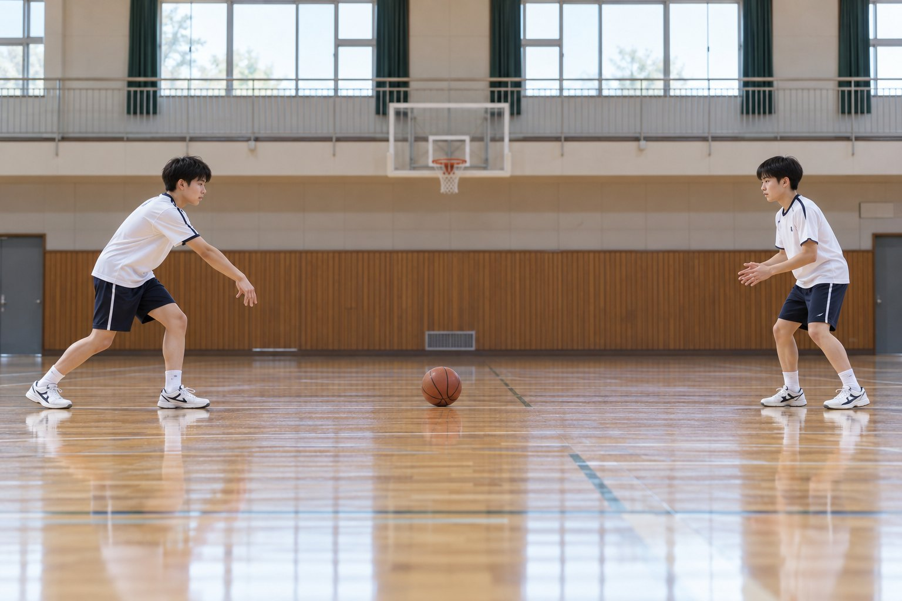
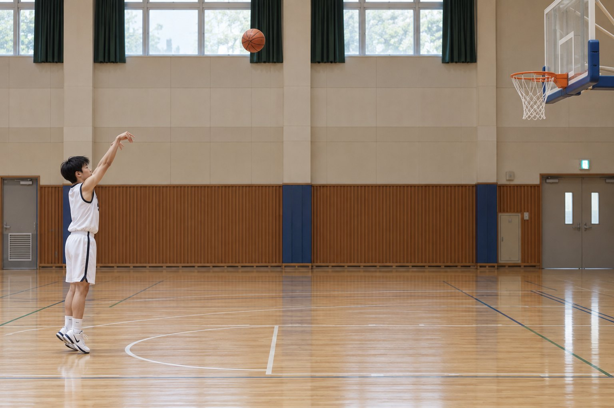
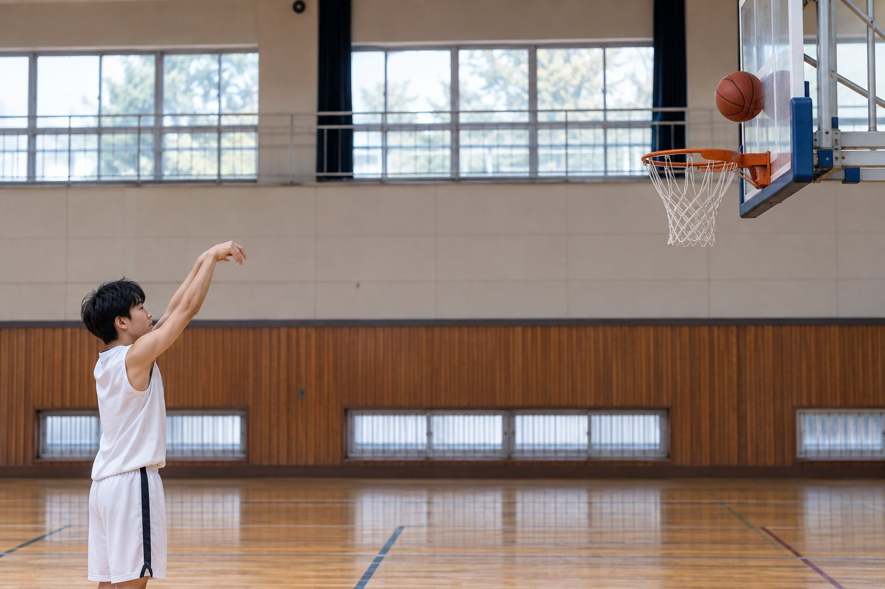
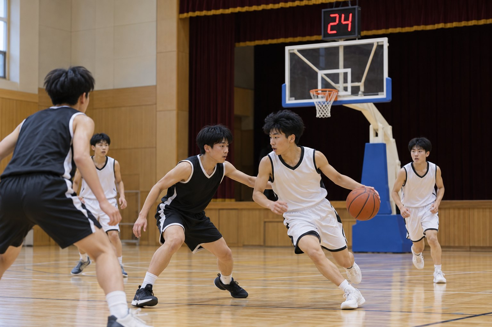
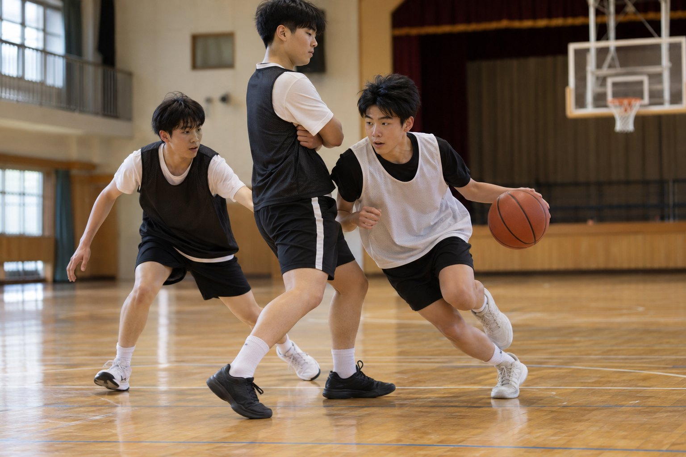
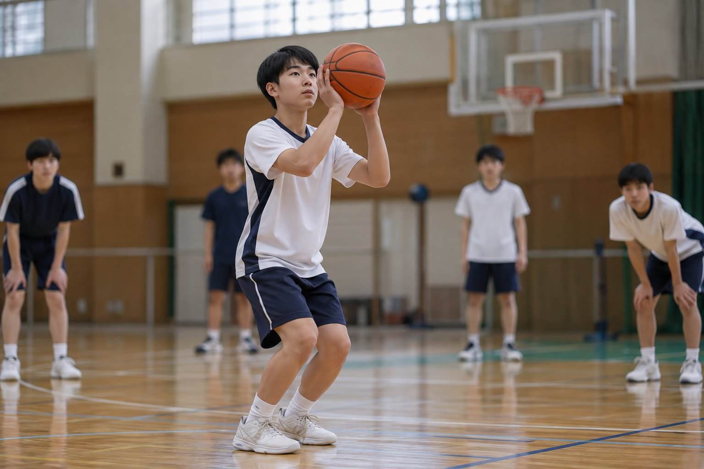

질문에 답하며 배우는 농구 규칙, 각도, 전술
이 학습지의 사진은 AI로 생성한 이미지입니다. → 키 또는 아래 버튼으로 넘어가요.

심판이 손을 빙글빙글 돌리면 트래블링(걸음 규칙 위반)이에요.
공을 잡은 뒤 드리블 없이 이동할 수 있는 건 2걸음까지예요. 3걸음째부터 트래블링이에요.
한 발을 축발로 정하면 다른 발은 자유롭게 방향을 바꿀 수 있지만, 축발을 떼면 안 돼요. (수업에서는 이렇게 단순화해 판정해요.)
드리블을 멈추고 공을 두 손으로 잡은 뒤, 다시 드리블을 시작했다.
드리블을 멈춘 뒤 다시 드리블하면 반칙이에요.
공을 잡고 오른발을 축발로 정한 뒤, 왼발만 움직여 방향을 바꾸며 패스했다.
축발을 고정하고 다른 발로 방향을 바꾸는 피벗은 허용돼요.
드리블로 달려오다 공을 잡은 뒤, 두 걸음 걸으며 레이업을 했다.
공을 잡은 뒤 2걸음까지는 허용돼요. 그래서 레이업이 가능해요.
공을 잡고 드리블 없이 축발을 떼었다가 다시 바닥에 디뎠다.
축발은 슛이나 패스를 하기 전까지 바닥에서 떼면 안 돼요.
손바닥이 아니라 손끝 패드로 공을 밀어 내리면 방향과 세기를 조절하기 쉬워요.
무릎을 굽혀 낮은 자세를 만들고, 시선은 공이 아니라 앞을 봐요.
손가락 끝 패드로 공을 누르는 모습

사진 위 선은 공의 이동 경로를 계산해 그린 이론선이에요.
공이 바닥에 닿는 각도(입사각)와 튀어 오르는 각도(반사각)는 거의 같아요. 각도는 바닥에 수직인 점선(법선)을 기준으로 재요. 공이 에너지를 조금 잃기 때문에 반사각이 입사각보다 약간 커져서, 조금 더 낮게 튀어 올라요.

던지는 각도를 바꾸면 공이 림에 들어가는 각도(입사각)가 어떻게 달라지는지 보세요.
공이 위에서 가파르게 떨어질수록 림의 원이 더 둥글게 보여서, 공이 지나갈 틈이 커져요.
다만 너무 높게 던지면 힘 조절이 어려워져 성공이 다시 줄어요. 50~60° 근처가 가장 안정적이에요.
림에 닿지 않고 깨끗하게 들어간 횟수예요. 실제로는 림이나 백보드에 맞고도 들어가요.
백보드는 수직이라서 가로 방향 속도만 반대로 바뀌어요. 그래서 맞는 각도를 알면 튕겨 나갈 방향을 예측할 수 있어요.
뱅크슛은 백보드의 사각형 모서리 근처를 겨냥해요.

점선은 백보드 면에 수직인 선(법선)이에요. 사진 속 공은 올라가는 중에 백보드에 맞았어요.
코트를 눌러 슛 위치를 정해 보세요. (위에서 본 하프코트)
먼저 예상해 보세요. 3점 라인이 골대에서 더 가까운 곳은?
3점 라인은 코너에서 골대 중심까지 6.60m, 정면에서는 6.75m예요. 그래서 코너 3점이 조금 더 가깝죠.
코트를 눌러 보세요.
공격 팀은 공을 잡은 뒤 24초 안에 슛을 던져 공이 림에 닿아야 해요. 시간이 지나면 공격권을 잃어요.

백보드 위의 샷클락이 24초를 세고 있어요.

스크린을 서는 학생이 움직이지 않고 서서 수비수의 길을 막고 있어요.
수비수 둘이 공 가진 선수에게 몰리면, 스크리너가 비어 있는 골대 쪽으로 파고들어 패스를 받아요.
공에서 가장 먼 쪽 수비수는 어떻게 할까요?
공 쪽 수비는 한 칸씩 이동해 공을 압박하고, 먼 쪽 수비는 안쪽으로 모여 골 밑을 지켜요.
공의 위치를 바꿔 보세요.
체크리스트를 확인하고 10개를 던져 기록해 보세요.

BEEF 네 가지를 지키며 던져요.